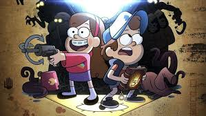

Welcome to Gravity Falls
Gravity Falls is a strange and mysterious town hidden deep in the forests of Oregon. At first glance, it looks like your average sleepy town—but look closer and you’ll uncover secrets, creatures, and conspiracies that defy the laws of nature. Whether you’re a first-time visitor or a returning fan, this site is your portal into one of the most mind-bending adventures ever created in animation.
What Makes Gravity Falls Special?
Gravity Falls' success can be attributed to a combination of factors including its compelling overarching story, engaging characters, intricate details, and a blend of humor and mystery. The show's ability to connect with audiences on a personal level, its exploration of relatable themes, and its commitment to creating a unique and memorable viewing experience also contribute to its popularity.